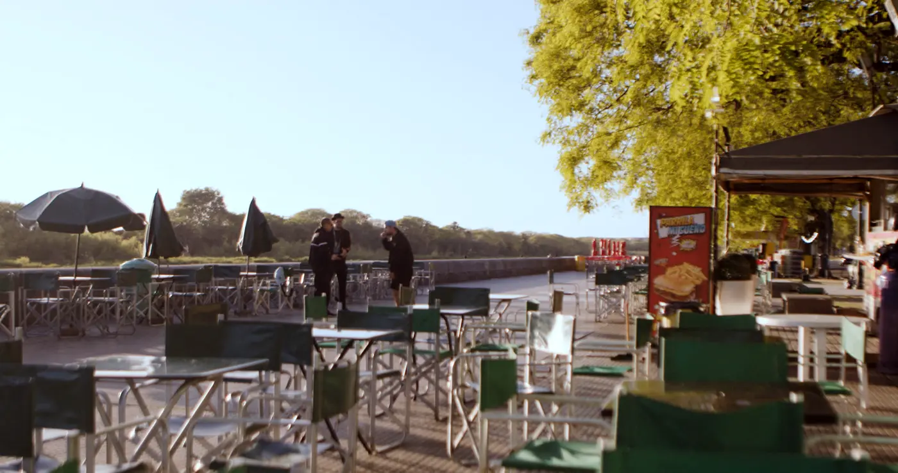

Trabajos/Flama Squad
Serie de comedia dramática · En busca de financiación
Tres treintañeros bonaerenses intentan resucitar su banda de rap adolescente y descubren que los sueños que no se cierran bien siempre vuelven, más grandes y más ridículos que antes.
Salvatore, León y Gaspar. Fotograma del piloto.
Desarrollo financiado por
Beca Creación
Fondo Nacional de las Artes
2022
Fondo Metropolitano
de las Artes
2022 · Línea Creación · Gobierno de la Ciudad de Buenos Aires
Formato
9 episodios · temporada 1
Duración
25 min · el primero es doble, 50–55
Género
Comedia dramática · arte urbano y rap
Rol
Creador · Guionista · Director
Origen
Buenos Aires, Argentina
Idioma
Español · lunfardo porteño
Registro
DNDA, 2024
Música original
Smoler Bazz
La serie
Salvatore, León y Gaspar fueron la Flama Squad: una banda de rap de barrio que nunca llegó a ninguna parte. Pasaron quince años. Salvatore trabaja para su Tío Charly y vive en una pensión con su hermana; León da talleres en comedores y carga con una deuda que lo persigue; Gaspar miente, manipula y sonríe. Ninguno de los tres esperaba volver a juntarse.
Una batalla de gallos en un bar de mala muerte los reúne por azar, y un video de esa noche se vuelve viral por las razones más equivocadas. De pronto son famosos. Pero la fama que consiguieron no es la que querían: son un meme.
Lo que sigue es una serie de situaciones cada vez más absurdas mientras los tres intentan convertir ese accidente en algo real. En el camino chocan con sus propios fracasos, sus vínculos rotos y una pregunta que ninguno se anima a responder en voz alta: ¿para qué siguen intentando?

Temporada 1
La primera temporada está guionada de punta a punta y registrada en la Dirección Nacional de Derecho de Autor. Hay biblia de serie, mapa de episodios y arcos cerrados.
Quiénes
Ekiz Tono (Facundo Iglesias)
Actor y músico
Darío Baez
Actor, músico y asistente de dirección
Devak
Actor y productor musical
Leopoldo Davis
Actor
Smoler Bazz
Música original. Grammy Latino 2001 con el Sindicato Argentino del Hip Hop
Julián Sequeira
Creador, guionista, director y montajista
Dónde está el proyecto
Lo que ya existe
Los 9 guiones terminados y registrados en DNDA. Biblia de serie. Más del 50 % del piloto filmado con fondos propios. Trailer, opening y banda sonora original en desarrollo.
Cómo se produce
Rodaje con actores y locaciones reales en Buenos Aires. La postproducción y los VFX se apoyan en herramientas de IA para llegar a una terminación competitiva con un equipo chico.
Qué falta
Financiación para cerrar postproducción, música y distribución. Y contactos: productoras, plataformas y distribuidores que puedan llevar la temporada 1 a estreno.